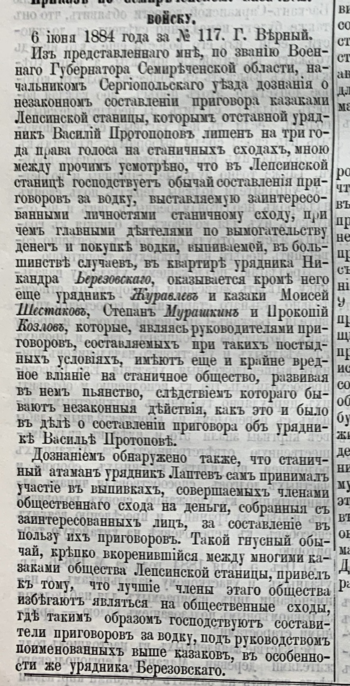
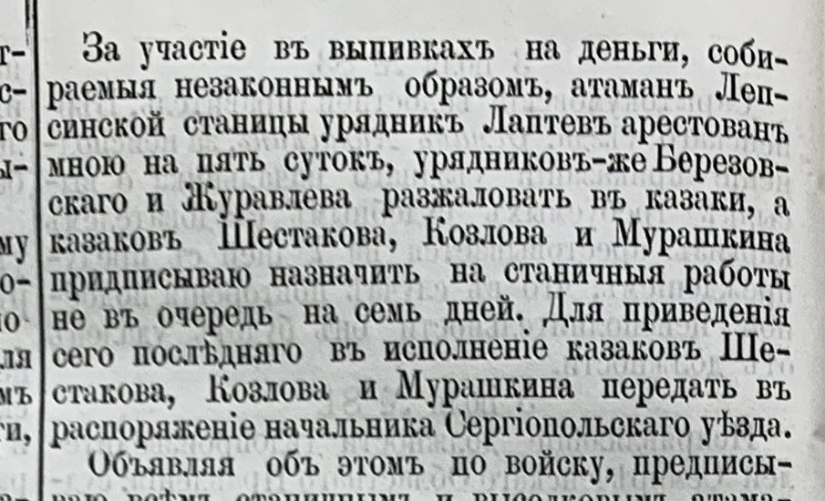
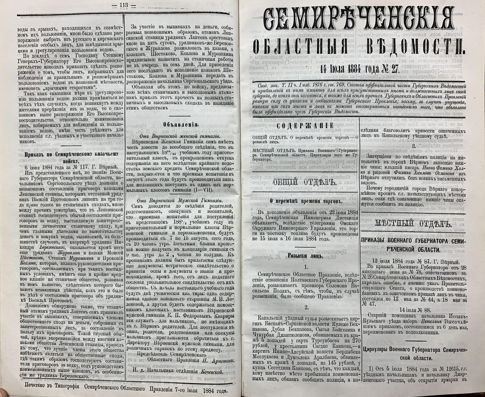

Zeitungsecke · 1884
Приказ по Семиреченскому казачьему войску № 117: военный губернатор разбирает, как в Лепсинской станице приговоры схода покупались выставленной водкой. Станичный атаман арестован, два урядника разжалованы в казаки, троим казакам назначены станичные работы.

СОВ, 1884, № 27, с. 113. Приказ по Семиреченскому казачьему войску, 6 июня 1884 года, № 117, г. Верный.
«Изъ представленнаго мнѣ, по званію Военнаго Губернатора Семирѣченской области, начальникомъ Сергіопольскаго уѣзда дознанія о незаконномъ составленіи приговора казаками Лепсинской станицы, которымъ отставной урядникъ Василій Протопоповъ лишенъ на три года права голоса на станичныхъ сходахъ, мною между прочимъ усмотрѣно, что въ Лепсинской станицѣ господствуетъ обычай составленія приговоровъ за водку, выставляемую заинтересованными личностями станичному сходу, при чемъ главными дѣятелями по вымогательству денегъ и покупкѣ водки, выпиваемой, въ большинствѣ случаевъ, въ квартирѣ урядника Никандра Березовскаго, оказывается кромѣ него еще урядникъ Журавлевъ и казаки Моисей Шестаковъ, Степанъ Мурашкинъ и Прокопій Козловъ, которые, являясь руководителями приговоровъ, составляемыхъ при такихъ постыдныхъ условіяхъ, имѣютъ еще и крайне вредное вліяніе на станичное общество, развивая въ немъ пьянство, слѣдствіемъ котораго бываютъ незаконныя дѣйствія, какъ это и было въ дѣлѣ о составленіи приговора объ урядникѣ Васильѣ Протоповѣ.
Дознаніемъ обнаружено также, что станичный атаманъ урядникъ Лаптевъ самъ принималъ участіе въ выпивкахъ, совершаемыхъ членами общественнаго схода на деньги, собранныя съ заинтересованныхъ лицъ, за составленіе въ пользу ихъ приговоровъ. Такой гнусный обычай, крѣпко вкоренившійся между многими казаками общества Лепсинской станицы, привелъ къ тому, что лучшіе члены этаго общества избѣгаютъ являться на общественные сходы, гдѣ такимъ образомъ господствуютъ составители приговоровъ за водку, подъ руководствомъ поименованныхъ выше казаковъ, въ особенности же урядника Березовскаго.»

Резолютивная часть того же приказа, соседний столбец.
«За участіе въ выпивкахъ на деньги, собираемыя незаконнымъ образомъ, атаманъ Лепсинской станицы урядникъ Лаптевъ арестованъ мною на пять сутокъ, урядниковъ-же Березовскаго и Журавлева разжаловать въ казаки, а казаковъ Шестакова, Козлова и Мурашкина предписываю назначить на станичныя работы не въ очередь на семь дней. Для приведенія сего послѣдняго въ исполненіе казаковъ Шестакова, Козлова и Мурашкина передать въ распоряженіе начальника Сергіопольскаго уѣзда.
Объявляя объ этомъ по войску, предписываю всѣмъ станичнымъ и выселковымъ атаманамъ приказъ этотъ прочесть на полныхъ станичныхъ и выселковыхъ сходахъ въ назиданіе этимъ обществамъ.»
Почему это стоит прочесть, даже если ваш род не из Лепсинской. Приказ был зачитан вслух на сходе каждой станицы и каждого выселка войска, в том числе в Голубевской, Подгорном, Охотничьем и Чунджинском. То есть предки, жившие там в 1884 году, этот текст слышали. И он показывает, как на деле работал станичный сход, тот самый орган, который выдавал приговоры о причислении в станицу, о разделе земли, о лишении права голоса. Приговор схода в документах выглядит решением общества, а военный губернатор прямо пишет, что в Лепсинской такие решения покупались за выставленную водку.
Здесь же видна цена вопроса для человека: отставной урядник Василий Протопопов был лишён права голоса на сходе на три года. Для казака это означало, что три года его слово при разделе земли и при любом станичном решении не учитывается.
Отдельно о фамилиях. Шестаковы, Козловы и Мурашкины встречаются и в справочнике родов Голубевской, но эти пятеро, это казаки Лепсинской станицы Сергиопольского уезда, а не наши. Совпадение фамилии в таком источнике не значит ничего: привязывать человека к роду можно только тогда, когда в самой записи назван его населённый пункт. Заметка оставлена здесь как пример этой ловушки и как источник по укладу войска.

Разворот целиком, для проверки контекста.
Источник: «Семирѣченскія областныя вѣдомости», 1884 год, № 27, часть официальная, приказ по Семиреченскому казачьему войску № 117 от 6 июня 1884 года. Подшивка за 1884 год из родового архива, найдено сплошным распознаванием годового тома.